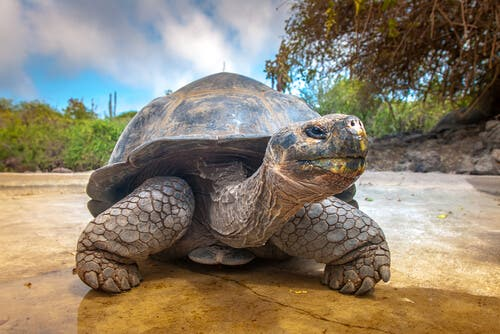
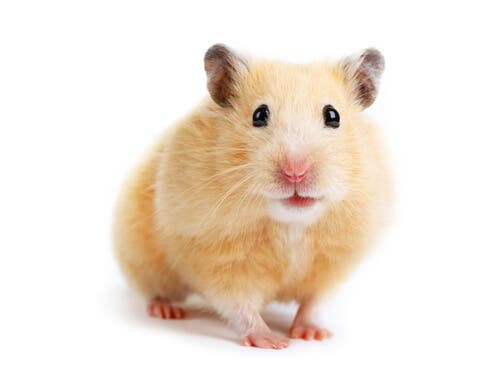

- Grandes
- Medianos
- Pequeños

- Medianos
- Pequeños

- Tierra
- Agua
- Unicamente pequeños
Esta pagina web es mi veterinaria, donde podras encontrar informacion y contacto con nosotros para saber sobre tu tipo de mascota.
"Veterinaria Iris" se enorgullese de poder brindar informacion a nuestros clientes, para mayor informacion contactar con: Iris Melisa Gonzalez Macias - irisg1171@gmail.com
| Nombre | Tipo de animal | Foto |
|---|---|---|
| Perro |
|
|
| Gatos |
|
|
| Tortugas |
|
 |
| Hamsters |
|
 |
Para mas informacion sobre animales visitar:
Informacion